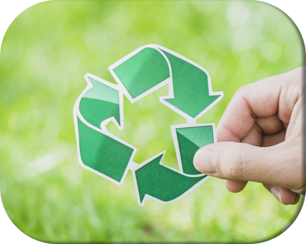

Página Inicial
O Que é Sustentabilidade
Colabore
Fale Conosco
ECONOMIA DE ÁGUA
A água é um recurso natural mais precioso da Terra, e que não pode faltar para que haja vida próspera no presente e futuro. No entanto, esse é um recurso finito.
EVITAR O USO DE SACOLAS PLÁSTICAS
Todo ano, cerca de 500 bilhões à 1 trilhão de sacolas plásticas são consumidas ao redor de todo o mundo. No Brasil, esse número é próximo de 1,5 milhão de sacolas por hora.
PREFERÊNCIA POR CONSUMIR PRODUTOS BIODEGRADÁVEIS
Com o aumento da consciência das pessoas em escala mundial, os produtos biodegradáveis vêm ganhando importância com o intuito de conservar o meio ambiente.
REALIZAR TRAJETOS CURTOS ATRAVÉS DE CAMINHADAS OU BICICLETAS
Em uma pesquisa realizada pela Liberty Seguros com moradores de seis capitais brasileiras, 82% dos entrevistados declararam que gostariam de morar em uma cidade compacta em que o uso do carro fosse praticamente desnecessário.

A IMPORTÂNCIA DA RECICLAGEM
Reciclagem é o processo em que há a transformação do resíduo sólido que não seria aproveitado, com mudanças em seus estados físico, físico-químico ou biológico, de modo a atribuir características ao resíduo para que ele se torne novamente matéria-prima ou produto.
REDUZIR O CONSUMO DE CARNE BOVINA
Seguindo a tendência de outros produtos alimentícios, a carne bovina, cada dia mais, está sendo comercializada em supermercados em substituição aos açougues.